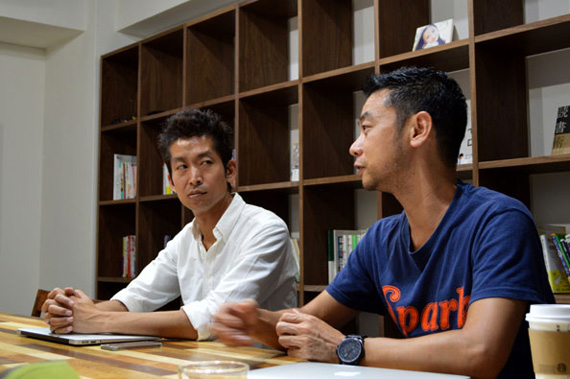

原永：シンガポールに僕ともう一人エンジニアがいて、日本側にエンジニアが３人、デザイナー２人、ディレクター１人、ベトナム側に４人、合計11人で開発しています。
原永：シンガポールに行ったのは2013年の４月からで、ピースオブケイクに参画した後に行きました。
原永：そんなに強くは思っていなかったです。自分がインターネットで実現できるターゲットがあるのであれば行きますし、なければ日本でやりますし、まったく海外に住みたいという考えはなかったですね。
原永：きっかけは、２年半くらい前からベトナムとシンガポールに行く機会があったことです。もともと、日本でエンジニアを育てる学校をやっていたんですよ。日本でなかなかエンジニアが採用できず、じゃあ育てればいいよね、というのでやっていました。１年で80人くらい教えていました。
原永：僕が掲げるこれからのエンジニア像は、「ハイブリットエンジニア」です。自分がこれまでやってきたことをいろいろ伝えたいと思っていて、そういう人材を育てようとしていました。今、サーバサイドができたりクライアントサイドができたり、設計ができる人は「フルスタックエンジニア」と言われていますが、それじゃ面白くないなと思っています。
「フルスタックエンジニア、それじゃ面白くない」と語る原永氏
僕は経営よりにシフトしたエンジニアです。加藤さんとりやりとりする時も「こういう風にやろうぜ」という目指すところがあったときに、テクノロジー的なアプローチや、タスクの優先順位、何を削ぎ落とし、何をつくるべきかというところをいっしょに考えます。
僕の場合は、ひとつのプロジェクトを３ヶ月でやることを目安にしています。その中で企画を立てて余分なものを削ぎ落とし自分で作ります。サーバサイドもクライントサイドも自分でやるというエンジニアが僕の中での理想なのですが、そういう人はあんまりいないんですね。誰かとコミュニケーションし必要なものを議論しながらつくれるというのがハイブリットエンジニア。そういうエンジニアをすごく育てたくて、日本で学校をやっていました。
そんな時に、ベトナムのほうで凄いエンジニアがたくさんいるという噂を聞き、ハノイ工科大学に授業を見学させてもらいに行きました。やっぱり凄いんですよ。日本人と遜色がないくらいレベルが高く、更に日本語でプログラムの授業を受けているという現場を目にして、これは凄いことになるなと思いました。そこから何回もベトナムに行くようになりました。
日本チームのメンバー
原永：色々とあるんですけれども、まず技術力。向こうでのアプリコンテストの審査員をしていたんですね。１年間かけて、１位、２位、３位を決めて、日本のIT企業に就職しましょうというコンテストです。やっぱり凄い子は技術レベルが高い。あと、かなりタフだと思いました。ベトナム人、アジアのオフショアは適当にやるイメージがあったので、意外な感じがしました。その時は学生の子だったのでそれなりですけども、しっかりしているなといった印象を受けました。
プログラミングの基礎ができていて、さらにそのいろんなものごとを考えられという人が「山のように」いて、これはいっしょにやるしかないかなという。なんでいっしょにやらないのか、その理由を探すのが難しいかなあと思いました。
それから、ベトナムに４回くらい行き、ついでにシンガポールで開かれていたカンファレンスに立ち寄り、その時にここに居たいなと（笑）ベトナム、シンガポールに行くとわかるんですけど、かなり勢いがあるんですよ。若いエネルギーっていうのが。あれを感じながら自分はあそこにいることで、すごい心地いいというか、あの人達が今後来るっていうその中に自分も身を置いておきたい、その波にいっしょに事業も乗れるといいなあと思いました。
原永：今後我々のコンテンツビジネスというのをアジア各国、グローバルでやる必要があるので、誰かが外に行ってあっちの目でやる必要があると思っていました。それが早め早めで動けるのであれば僕が行こうと。離れることのデメリットより、行くことのメリットのほうが大きいので、そこを考慮したうえで相談にのってもらいました。
加藤：何も反対はなく「あ、そうなんすか」みたいな（笑）
原永：いきなりな感じだったので。
加藤：もちろん心配がなかったわけではありません。コミュニケーションコストは多少増えますし。それによって問題が起きたこともないわけではないですが、そこは密にやりとりすることでなんとかしています。毎朝、９時45分に原永さんからLINEの通話が掛かってくるんですよ。日本にいたら逆にしないじゃないですか（笑）「今日は特にないすねー」みたいな日もあるんですけど、でもなんかあるじゃないですか。そのあとも随時、チャットなりLINEなり必要だったらスカイプとかでつながって話をしたりとかするんで、コミュニケーションはむしろするようになりました。あと、記録をちゃんとして仕事を進めるようになって、それは日本でもそうやるべきじゃないですか、かえっていい仕事の仕方ができるようになりました。
原永：そうですね、健全になりますね。打ち合わせ時間も短くなりました。

毎朝、9時45分にLINEの通話で情報共有をしている
原永：いろんなことがはじめて過ぎて…。僕、18年間兵庫県のど田舎で暮らしていて、大学で東京に来てから18年間 36歳まで過ごして、次のフェーズに来ているんですよ。自分にとって18年というのが節目なんです。東京に来た時もカルチャーショックを受けました。
加藤：すごい田舎だよね？
原永：そうですね、兵庫の田舎です。東京のおもしろいところは大好きですし、ビジネスチャンスもいっぱいあるので、ここにいてもいいと思うのですけど、あえて、辛いほうに、というか、何も知らない世界に飛び込みたいなというのがあったので行きました。
プライベートのほうではこどもが二人いて、英語で教育をしています。これも実験なんですけど、ほかの人がやらないような育て方をしてみようと、どうなるかわからないですけど。
行ってよかったなぁと思うのが、加藤さんの話で「多様性」という話がでましたけれども、ダイバーシティな感じが僕はすごく好きで、世の中にいろんな人がいて、いろんな価値観があってそれを認めながら、自分を発揮できる人に子供にも育って欲しいし、僕も足りないところがあるのでそうなりたいなと思っています。シンガポールには民族がたくさんいて、看板も５ヶ国語くらいで書かれていたり、話していても中国語、英語に次々変わっていくような世界なので、すごい刺激的です。宗教もいろいろあって、イスラム教の人はこう考えるんだという世界があり、いろんな人がいていろんな考え方がある中で生きていけることは自分も成長できると思っています。汚いところもあり、昔は拒否反応を示していたけど、それはそれでいいし、なんでも受け入れられるようになってきたので、よかったなぁと思います。本当に勢いがあって元気があって、加藤さんも言ってましたけど上を向いて生きているひとが多いので、気持ちがいいんですよね。テンションが常に高い状態になるんです。
加藤：日本の通勤電車とか、どんよりしてるもんね。いいなあ。
シンガポールの風景（※原永氏撮影）
原永：いえ。朝の９時くらいから家で仕事をし始めて、10時くらいになると道も空くので外に出て、Wi-fiと電源が無料で使える国立図書館に行くんですよ。1階にカフェがあって、コーヒーを毎朝出してもらってそこでスタンバイをしてミーティングをします。そのあと、中に入って11〜17時くらいまで仕事をしています。もう一人シンガポールにいるエンジニアの子も図書館のどこかにいるんですよ。
原永：会わないです（笑）どうせ会っても図書館なので喋れないので。チャットで「8階にいま〜す」ってメッセージが入ったりします。13時くらいになって「ご飯行く？」って連絡をしてチキンライスを食べに行きます。どこに電源があるか、どこのWi-Fiが強いか全部知っているんですよ。ナイスカフェマップというのを作っていて、Google docsにまとまっています。3人くらいでシェアをしながら作っています。大体20時くらいまでカフェにいて、帰る感じですかね。
原永：子供の世界もノマドなところがあって、みんな転勤族なんですよ。みんないろんなところから来て、1年でどこかに行ってしまったりする。お母さんのメールを見ていると「私達はグローバルノマドなので寂しいけど仕方ない」みたいなことが書いてあるんですよ。
加藤：そうですね。働き方は、ようするになんでもいいですよ。成果をだせばいいだけなので、そこは伝われば良いと思ってますし、日本でもエンジニアは週一で在宅勤務してもいい、といったリモート勤務をはじめたりして、その辺は柔軟にやってますね。全部実験なんですよ。実験してみて良ければ伸ばしていけばいいし、ダメならやめればいいと思っています。
原永：エンジニアがリモートになるとチャットのレスポンスがめちゃくちゃ早くなるんですよ。ずっと気にしてなくてなならないので。
加藤：それ、なりますよね。僕もベトナムに行ったときは、「メールの返事が珍しく早いですね」と言われてました（笑）あれ不思議なものですね。それしかないのでちゃんと見るようになるんです。
電源、Wifiを完備しているシンガポールの図書館※
ランチでチキンライスを注文※
ベトナムのオフショア開発の視察、システム開発に関するご質問、
お仕事のご相談、お見積の依頼など、お気軽にお問い合わせください。